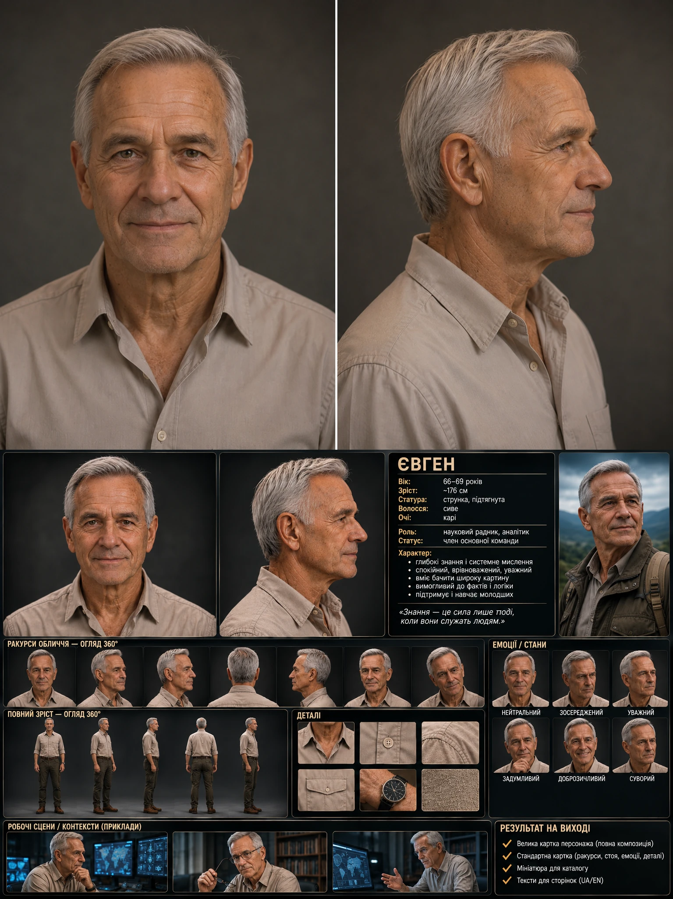

ХАРАКТЕР І ПЕРЕКОНАННЯ
Людство має не лише вижити, а й процвітати
Євген мислить масштабно й системно. Він розуміє, що нове суспільство не може складатися лише з характерників: для його розвитку потрібні інженери, керівники виробництв, економісти, науковці та організатори великих систем. Він пропонує залучати до спільної справи людей без здібностей характерників і наголошує, що хоче будувати «наше» майбутнє, а не окреме суспільство для обраних.
У роботі він спирається на особисті розмови й уміння оцінювати людей. Під час добору команди відсіює тих, кого вважає надто жорсткими, жадібними або звиклими до влади. Натомість шукає фахівців, які вміють будувати складні системи й залишаються порядними. Браслети мислезв’язку він не нав’язує: пропонує їх тим, хто готовий долучитися.
НАУКА, МЕДИЦИНА ТА КОМАНДА
Створює основу для спільної роботи
Після домовленості з дідом Миколаєм Євген надає приміщення для наукового центру, зокрема лабораторний комплекс у столиці та додаткові можливості для розміщення дослідників. Він підтримує створення медичного напряму й залучає до роботи лікарів зі своїх клінік. Науковці отримують доступ до дослідницьких матеріалів і технологій Нульового плану.
За кілька днів Євген формує першу команду з керівників підприємств, лікарів, науковців, інженерів, управлінців, фахівців із логістики та фінансів. Його робота допомагає перетворити стихійне зростання спільноти на структуру, що може координувати великі проєкти.
ЕВАКУАЦІЯ ТА ЗАХИСТ
Від підземних міст до мережі укриттів
Євген бере участь в організації переселення до підземних міст: його команда домовляється з адміністраціями та школами, проводить зустрічі з мешканцями, видає браслети, готує входи й координує потік людей. Під час загострення обстрілів він підтримує рішення не чекати і приймати до Сумського підземного міста все населення, навіть якщо це означає тимчасово щільніше розміщення.
У подальших подіях Євген працює з програмою розгортання захисних сховищ. Разом із Заїбом та урядовцями він оцінює обмеження окремих модулів і підтримує перехід до мережі з підземними переходами та вузловими комплексами. Такі комплекси мають містити медичні центри, запаси, автономне енергопостачання й диспетчерські пункти, щоб люди могли переміщуватися між захищеними об'єктами без виходу на поверхню.
ЕКОНОМІКА ТА ПЕРЕГОВОРИ
Захищає українські можливості
Євген бере участь у формуванні економічних правил співпраці між Україною та Нульовим планом. Він пояснює, що поява нових технологій не скасовує ринку, а змінює його: важливими залишаються якість, унікальність, швидкість і цінність роботи.
Під час переговорів з Альянсом щодо лазерних комплексів він погоджується на передачу технології, але наполягає на поетапному процесі, фінансуванні українських технічних груп, гарантіях і компенсації. Він не хоче, щоб Україна втратила власне виробництво через поспішну передачу повного циклу. У третій книзі президент окремо відзначає, що Євген уміло відволікає увагу Альянсу на лазерні турелі, поки готуються інші розробки.
ДОВІДКОВІ ДАНІ
Що підтверджено текстом
Підтверджені риси й роль
- Заможний підприємець; у першій появі прямо названий олігархом.
- Ініціативний організатор, який бачить потребу в системній економіці, науці, промисловості та управлінні.
- Уміє добирати людей, вести складні переговори й координувати ресурси.
- Працює з науковими, медичними, евакуаційними, інфраструктурними та економічними програмами.
Мислезв’язок і статус
Євген отримує браслет мислезв’язку й користується ним для доступу до інформації, спілкування та координації. У наданих текстах немає підтвердження, що він пройшов ініціацію або самостійно відкриває портали.
Зовнішність і невідомі параметри
Рукопис не встановлює точного віку, зросту чи докладного опису зовнішності Євгена. У першій сцені його описано як невисокого, худорлявого, літнього, але енергійного чоловіка. Детальніший візуальний образ на сторінці створено за наданою фотографією.
Джерела в циклі
Перша книга: знайомство з дідом Миколаєм, меценатство, пропозиція долучити людей без здібностей, формування команди, науковий центр, економічні й організаційні рішення. Друга книга: переселення до підземних міст, економіка, переговори щодо зброї та технологій. Третя книга: завершення програми бомбосховищ і планування об'єднаної мережі захищених комплексів.